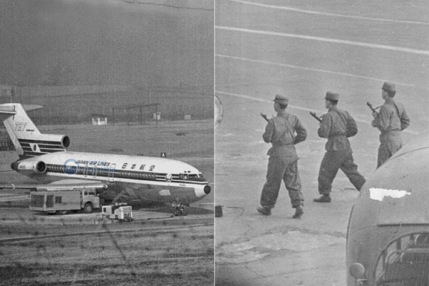
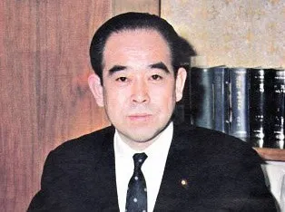

JAL Flight 351 Hijacking
March 31st, 1970
JAL Flight 139
From Haneda
To Fukuoka
outline
사건명
요도호 납치 사건
납치 항공편
일본항공 351편
출발지
도쿄 하네다
목적지
후쿠오카
사건 발생지
일본 상공 및 김포 공항
범인
일본 극좌 공산주의 적군파
info
11970년 3월 31일 오전 7시 33분경 도쿄 하네다 공항에서 후쿠오카로 가던 일본항공 국내선 351편, 요도호를 타미야 타카마로
적군파의 주동자로 '마로'라는 별명으로 불렸다. 승객들에게 유일하게 자신의 성을 밝혔다.
등 9명의 일본 적군파 조직원이 일본도, 폭탄, 무기 등을 꺼내며 공중 납치했다. 이들의 목표는 북한으로의 망명을 통해 북한을 일본 공산혁명을 위한 배후지로 만드는 것이었다. 비행기는 우선 후쿠오카에 착륙, 일부 승객들을 석방하고 연료를 보급했다. 일본 경찰 및 자위대가 공작을 펼쳤지만 오히려 범인들을 더욱 자극했다. 이후 북한으로 출발했지만 한국 정부와 일본 정부가 협업해 북한 공항처럼 꾸민 김포공항

김포공항의 태극기를 내리고 인공기를 올리거나 '환영 평양 도착'같은 플랜카드까지 걸었다.
으로 유도해 착륙했다.하지만 인민군으로 위장한 한국군의 실수로 평양이 아니라는 것을 알아챘고 각종 협상 끝에 탑승객 전원과 야마무라 신지로

당시 인질 승객 전원 석방 대신 본인이 직접 인질이 되겠다고 설득하며 국민적 영웅으로 칭송되었다. 차관 등 13명을 인질로 맞교환해 북한으로 향했다. 이후 북한의 미림비행장에 도착하고 범인들은 북한에 망명했다.
적군파의 주동자로 '마로'라는 별명으로 불렸다. 승객들에게 유일하게 자신의 성을 밝혔다.

김포공항의 태극기를 내리고 인공기를 올리거나 '환영 평양 도착'같은 플랜카드까지 걸었다.

당시 인질 승객 전원 석방 대신 본인이 직접 인질이 되겠다고 설득하며 국민적 영웅으로 칭송되었다.